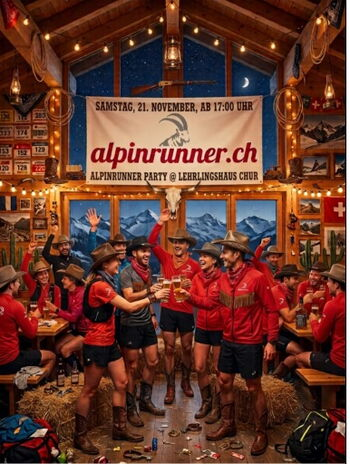

Alpinrunner Abend

Samstag, 21. November ab 17.00 Uhr
Wir feiern dieses Jahr nach dem Motto - "Western"
Wir feiern bei einem feinen, gemütlichen Nachtessen unter Lauffreunden mit Jahresrückblick und vielen Fotos.
Die schönsten Fotos des Jahres zeigen wir euch von den Wochenendetrainings, Laufwoche, Pfinsgttage. Wir sehen uns das Jahresprogramm 2027 an und Informieren von unseren Vorhaben für das Nächsten Jahr. Traditionsgemäss wird das Leiterteam euch feine Köstlichkeiten zubereiten.
Gemäss dem Motto gibt es dieses Jahr Überraschungs-Gäste
Für das Dessertbuffet freuen wir uns auf süsse Mitbringsel für "das berühmte Dessertbuffet"
wir freuen uns auf viele Freunde, wenn du möchtest im Western-Outfit
Am Sonntag 10.00 Uhr laufen wir eine gemütliche Runde ab Lehrlingshaus
gleich anmelden
Dieses Formular läuft weiterhin auf der bestehenden Website von alpinrunner.ch.
Zum FormularUnkostenbeitrag zum Alpinrunner Abend Fr. 50.- (Essen, Getränk inkl.) wird per Rechnung zugestellt.
bereits angemeldete Teilnehmer
- Marco und Petra
- Brigitte und Thomas
- Dani und Olivia
- Michi
- Iris und Lädi
- Sven
- Röbi und Maria
- Micheline *
- Martin und Isabella
- Doris *
- Silvia
- Ruedi
- Bea & Peter
- Corina
- Urs
- Barbara